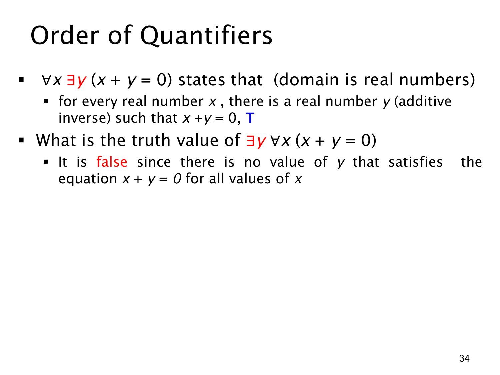

L1.2 · 第 34 页讲解原文
查看这一页课件

混合量词换序：加法逆元能随 x 改变
本页的论域是所有实数，比较两个只在量词顺序上不同的式子。
∀x∃y(x+y=0)
读作“对每个实数 x，都能找到某个实数 y 使和为 0”。它为真：给定 x 后选 y=−x 即可。若 x=3，选 y=−3；若 x=−5，选 y=5。这里 y 是 x 的加法逆元，可以随 x 改变。
交换量词次序后，式子变成
∃y∀x(x+y=0).
它要求先找到同一个固定的实数 y，让所有实数 x 都满足 x+y=0。这为假。例如若它同时对 x=0 和 x=1 成立，从 0+y=0 得 y=0，从 1+y=0 得 y=−1，矛盾。因此没有这样的共同 y。
比较两式时，关键是见证何时选择：∀x∃y 可以先看 x 再选 y；∃y∀x 必须先固定 y，再接受所有 x 的检验。所以混合量词一般不能随意调换顺序。